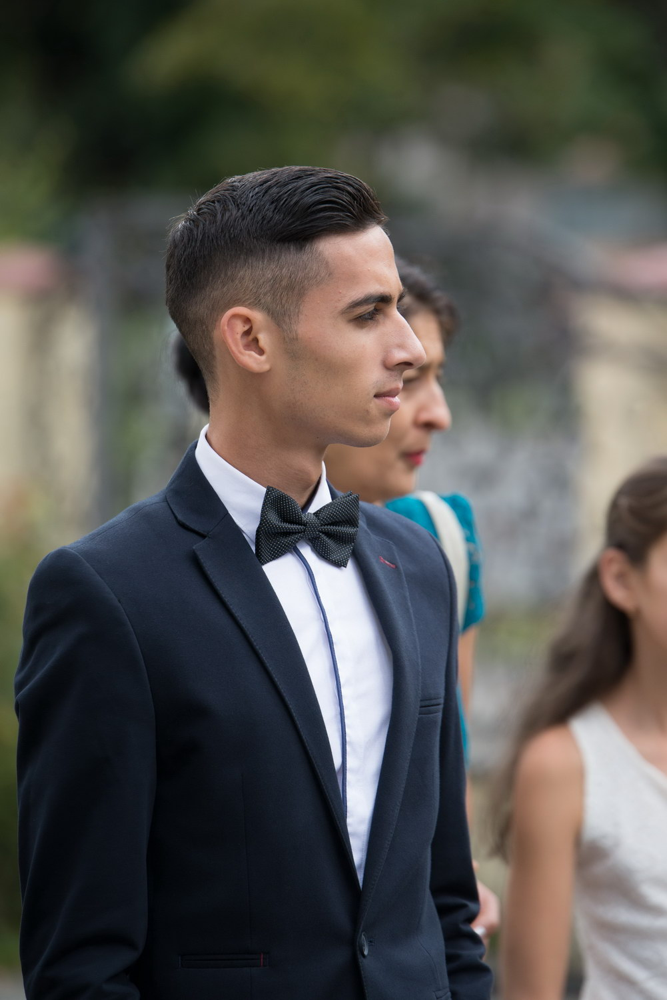

|  |
România, Sibiu |
>
| cirjan.marius7@gmail.com |
| Sexul: Masculin |
| Data naşterii: 15/07/1998 |
| Naţionalitatea: română |
| WORK EXPERIENCE |
|
|
- Graffino, Sibiu (Romania)-intership as front-end developer
- Graffino, Sibiu (Romania)-front-end developer
|
| EDUCATION AND TRAINING |
|
| 2017-Present |
- Universitatea Lucian Blaga - Facultatea de Inginerie, Domeniul : Calculatoare și Tehnologia
Informației (CSAC), Specializarea : Tehnologia Informației (IT), Sibiu (România)
|
| 2013–2017 |
- Liceul Constantin Brancoveanu, Horezu (România)
|
| PERSONAL SKILLS |
|
| Mother tongue |
|
| Foreign language(s) |
| UNDERSTANDING |
SPEAKING |
WRITING |
| Listening |
Reading |
Spoken interaction |
Spoken production |
|
| B2 |
B2 |
B2 |
B2 |
B2 |
|
| English |
| Communication skills |
- Abilități de lucru in echipa dobandite în urma participării în activități de voluntariat
- Abilități de comunicare,creativitate și învatare rapidă
|
| Organisational / managerial skills |
- Abilități de leadership,cunoștiințe de prim-ajutor dobândite în cadrul voluntariatului Crucea Roșie
|
| Known languages |
- C , C++ , Java , HTML , CSS , PYTHON , PHP
|
| Driving licence |
|